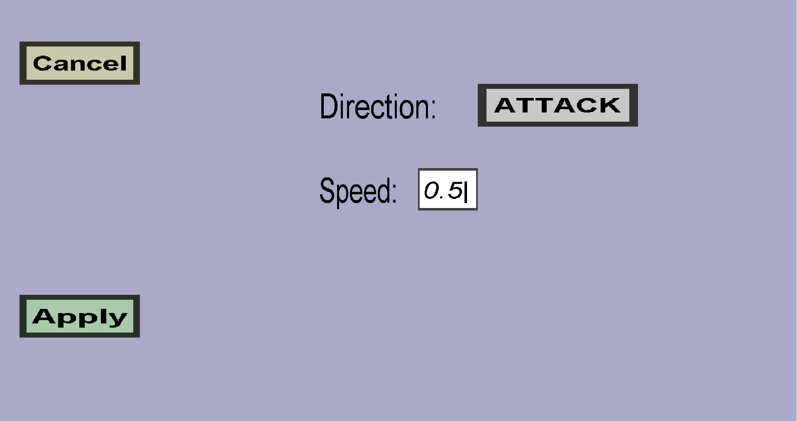

The launch attack effect menu can be used to configure a launch attack effect. Launch attack effect will launch the target in a specified direction. (For instance, it could knock the target up or knock the target away.) This menu should look like this:
The button on the right of Direction: can be used to configure the direction to which the target will be launched. The options are:
The speed is basically the 'knockback strength': The higher the speed, the further the knockback/knock-up. Using a negative speed will cause the target to be pushed in the opposite of the chosen Direction. The speed should be specified in meters per tick (1 minecraft block is 1x1x1 meter big and 1 second = 20 ticks). I think the easiest way to determine the right speed is by experimenting with different values.